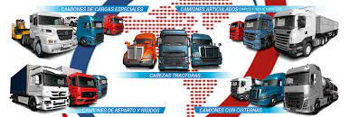
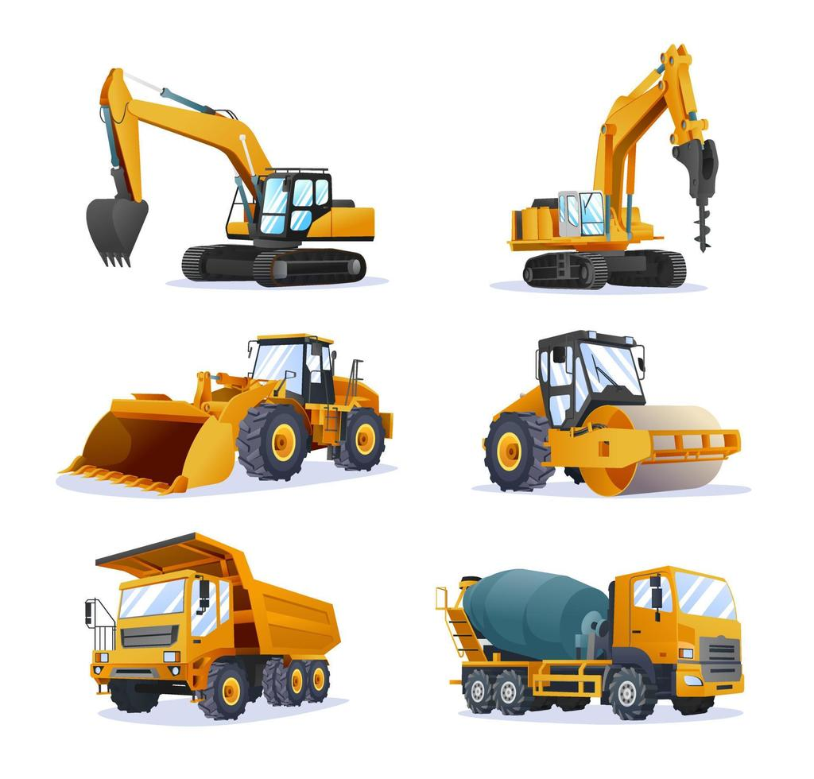

sin importar a nuetras expectivas o nuetrs gustos bisuales, podras en con un veiculo que adacte a ti.
Tipos de vehículos. Los hay Tipo A, o vehículo diseñado con áreas para transportar pasajeros sentados y de pie, que permitan su fácil desplazamiento; y Tipo B, o vehículos concebidos para transportar pasajeros exclusivamente sentados.
¿Estás pensando en comprar maquinaria pesada? Debes saber que existen varios equipos, cada uno con su propio conjunto de usos. A medida que evalúas los proyectos que lleva a cabo tu empresa, puedes decidir qué tipos de maquinaria pesada agregar a tu flota.
